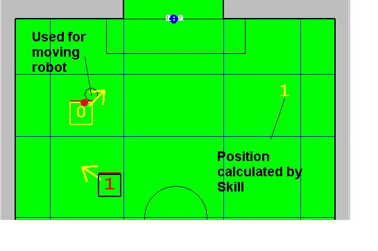
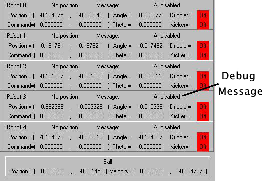
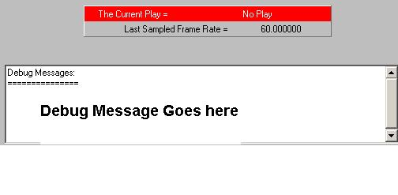
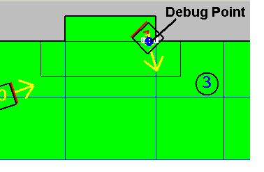
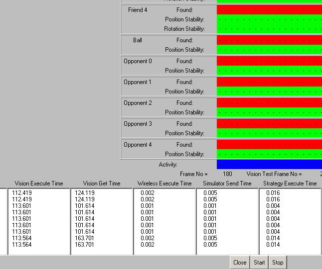

Debugging and Diagnostic Tools
Drag-n-Drop in the AI:
The AI GUI also provides a drag and drop feature. This is particularly useful for testing
strategies while not having robots actually move. It also allows for testing without a vision system or simulator running. Using the appropriate controls, a user can position and rotate any friendly and opponent robots and the ball directly in the GUI. When the AI is run the objects that have been placed will never move from their locations, but their set destinations can be observed and prove quite useful. Objects can be placed and remove using the place objects menu in the GUI, or using the hot keys as listed in this menu. When a robot has been placed, it can be moved around by hovering over the moving circle, clicking and dragging around. Left clicking on a placed robot will bring up its location setting circle, and right clicking will bring up its rotational setting circle. Finally, control clicking will remove the object from the field. In the figure below, robots 0 and 1 have artificially been placed on the field.

Debug Messages:
A debug message can be set for each robot during any given frame. This message is displayed next to the robot position in the GUI. Debug messages are intended to relate to the user what the robot is trying to do at a given time, and it is strongly encouraged to set a debug message particular to whatever action a skill is running every frame. Unlike debug output messages, debug messages are logged and can be played back in the playback viewer. In order to set the a robot's debug message, add the following line of code to any skill:
strategy->getCurrentFrame()->setMessage(char* message);

Debug Output Window:
Debug messages can be printed to a scrolling pane in the GUI quite easily. This can be very helpful if you want to print out a lot of information all at once, but should not be used to print out a lot of information all the time. To print a debug message to the scrolling pane, add the following line of code:
GUI_Record.debuggingInfo.addDebugMessage(char* message);

Debug Points:
Debug points can be used to draw points on the field and can prove very helpful when writing and debugging strategy code. Debug points are displayed as blue points with a serial id's on them. In many skills points are calculated based on various geometric algorithms. These points may be used to determine the robot's position, to know where the robot is aiming to shoot, and much more. Each robot is provided 20 debug points every frame, with five robots in the system 100 debug points are created and accessible for use at any time. Debug points must be set in order to be displayed during any particular frame. Thus once debug points stop being set, they automatically disappear from the screen. To add a debug Point to your skill, you need the following line of code:
GUI_Record.debuggingInfo.setDebugPoint(int robotID,
int debugPointnum,
Pair PointOfInterest);

System Quality Test:
This window provides various information regarding the quality of vision data, and how long various portions of the system are taking to run. Specifically, is provides the user:
- Time AI waits at beginning of the loop to receive a new packet from vision (ms)
- Time vision took to process the current frame (ms)
- Time it takes to run all strategy code (ms)
- Time it takes for wireless code to transmit a packet (ms)
- Time it takes to send the last set of commands to the simulator (ms)
- Total AI loop time (ms)
- The framerate the AI is running at (fps)
- The framerate the vision system claims to be running at (calculated using vision time stamps, fps)
The tool displays graphically 30 frames of status for all objects on the field. The status includes if the robot is found, if the position of object was stable, and if the rotation of the robot was stable (if applicable). If the object is found or stable a green chunk is displayed and if it is unstable or not found a red chunk is displayed. Instability is defined as a value moving too quickly, which most likely means an object is flicking in and out, or back and forth on the field due to vision error. Each row belongs to an object while each column belongs to a frame. The blue line with yellow moving box is just an indicator as to which column is being updated on screen right now.

LED Latency Test:
In order to run a system latency test, it is first necessary to set the ball lost frames to one. Then by hooking up the led tester to the dribbler port of the robot, and calibrating the vision system to see the diodes turned on as the ball, run the LED latency tester play from the other plays menu. The robot will flash the LED's on and off for a number of seconds. Any robot that is powered and receiving commands will work. The logic behind this test is quite simple: if the ball is found the dribbler must be on, so don't dribble. If the ball is lost the dribbler must be off so turn the dribbler on. After the LED's flash for a while, a dialog box will pop up with a min/max/mean latency frames for the duration of the test.